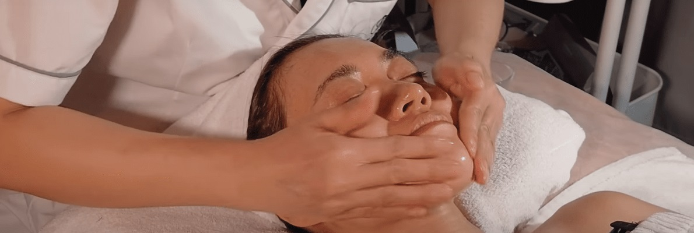

Массаж лица, интенсивный уход и чистка для здоровой кожи
Цена
от 1 000 ₽
Длительность
60-90 минут

Эстетическая косметология -- это комплекс профессиональных процедур для ухода за кожей лица, включающий массаж, интенсивный уход и глубокую чистку. Это базовые процедуры, которые составляют основу здоровой и красивой кожи в любом возрасте.
Каждая процедура подбирается индивидуально с учётом типа кожи, её состояния и потребностей. Массаж расслабляет мышцы и улучшает кровообращение, интенсивный уход насыщает кожу питательными веществами, а чистка обеспечивает глубокое очищение пор и устранение несовершенств.
Косметолог Надежда использует профессиональную косметику и проверенные методики, чтобы каждая процедура приносила максимальный результат. Регулярный уход за кожей -- залог молодости и сияния на долгие годы.
Профессиональный уход за кожей лица
Расслабление, демакияж, очищение, эксфолиация, масло с витаминами, маска по типу кожи. 1 час
Насыщение клеток кислородом, укрепление сосудов, увлажнение. Для куперозной, чувствительной, сухой кожи
Глубокое очищение пор. 2 пилинга и профессиональная косметика для идеально чистой кожи
Показаны этапы комплексной чистки лица — 60-90 минут полного ухода
Полное снятие макияжа и поверхностных загрязнений
Подготовка кожи, восстановление pH-баланса
Размягчение верхнего ороговевшего слоя кожи
Деликатное удаление комедонов и закупоренных пор
Дезинфекция, противовоспалительное действие, сужение пор
Успокаивающая или увлажняющая маска
Крем, сыворотка, SPF-защита
Эстетическая косметология поможет при следующих состояниях кожи
Процедура не проводится при наличии следующих состояний
Для наилучшего результата соблюдайте рекомендации
Процедуры, которые дополняют и усиливают результат
Профессиональный уход за вашей кожей. Косметолог Надежда подберёт процедуру, которая подарит вашему лицу сияние и свежесть.